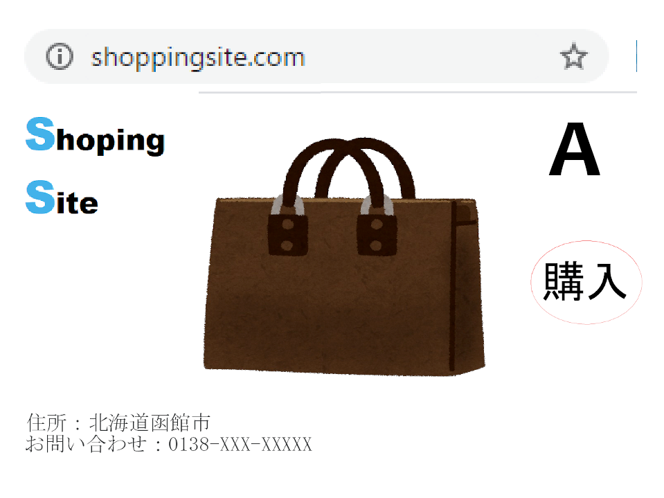
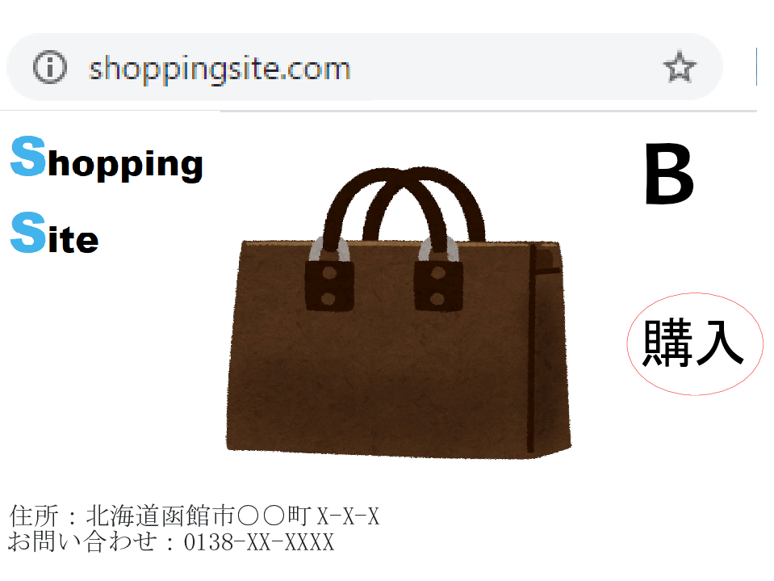
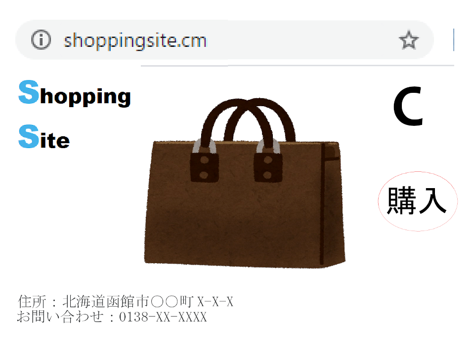
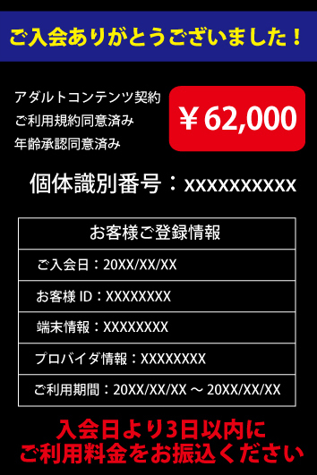

詐欺クイズ！
目次
偽ブランド品詐欺・偽販売サイト詐欺
以下のA～Cのショッピングサイトのうち、どのサイトから商品を購入したら良いでしょうか？



正解は... B
ショッピングサイトを利用する際は、そのサイトが安全なものかどうか確かめるため、注意深くサイト全体を見渡しましょう。Bは、ドメインに不審な点が無く、住所や問い合わせ先もしっかりしたものが記載されています。
これら以外にも確認すべき点がいくつかあるので、被害に遭わないためにも把握しておきましょう。
Aでは住所が途中までしか記載されておらず、場所を明確に絞り込むことができません。正当な企業であれば、店舗の住所を載せているので不審です。
Cは分かりづらいですが、ドメインが「.com」でなく「.cm」になっています。これは「.ja」が日本を表すように、「.cm」はカメルーンを表します。しかし、「.com」と似ているため悪用されることが多いです。
マカフィーが行った「危険なWebサイトの世界分布」によると、「.cm」が使われているサイトの内、実に36.7％が危険性があるサイトです。このように気づかれないような悪意のある仕掛けに騙されないようにしてください。
もし不正解だったら... もう一度サイトを読んで学びましょう！
偽ブランド品詐欺・偽販売サイト詐欺
アカウント乗っ取り詐欺
次の選択肢の中で最適なパスワードはどれでしょう
1.Facebooktarou
2.Tarou12345
3.taRou0FB
正解は... 3の選択肢が最適！
3番の選択肢はアルファベットの小文字と大文字と数字の3種類が使われていてかつその3種類が複雑に使われているので最も最適だ！
もしツイッターのアカウントだったらパスワードの最後の2文字をTWにしたりすることによって簡単で覚えやすく予想されにくいパスワードができるのでこういった工夫をしてSNSを活用しよう。
1番の選択肢はあまりにもわかりやすすぎるし、数字も混ざっていない。
2番の選択肢は大文字、小文字、数字の3種類が混ざってはいるが、肝心の文字列が簡単に想像できてしまうため最適とは言えない。
もし不正解だったら... もう一度サイトを読んで学びましょう！
アカウント乗っ取り
フィッシング詐欺
どれが偽サイトのページでしょう
正解は...
もし不正解だったら... もう一度サイトを読んで学びましょう！
フィッシング詐欺
スマホ決済・クレジットカード不正利用
・クレジットカードがあれば、スマートフォンアプリでショッピングできるので便利です。利用するうえで、正しい行動はどれでしょう？
A. 常に最新の状態で利用できるよう、アプリストアの自動更新をオンにした。
B. もうこのアプリでのショッピングを利用しないことにしたので、アプリをアンインストールした。
C. いつでもどこでも利用できるのが利点なので、電車で移動中の隙間時間に利用する。
正解は... A
更新を疎かにしていると、更新前の脆弱性を突いて不正利用される危険性があります。そのため、自動更新をオンにするなどして常に最新版にアップデートすることを心掛けましょう。
もう利用しないショッピングサービスのアプリは、アカウントを消去するなどして個人情報が残らないようにしましょう。Bのようにアンインストールだけでは個人情報が残ったままなので、気づかぬうちに不正利用の被害に遭う危険性があります。
Cの「いつでもどこでも利用できるのが利点」というのは正しいですが、電車の中など他の人が多くいる場では、盗み見られたくない情報を利用することは避けましょう。
もし不正解だったら... もう一度サイトを読んで学びましょう！
スマホ決済・クレジットカード不正利用
セキュリティソフト等の偽警告
・この画面が表示されたら、あなたはどうしますか？

出典：トレンドマイクロ Webを見ていたら突然の「システム破損」「ウイルス感染」表示、再び活発化した偽警告
A. 画面の指示に従う
B. ブラウザを閉じる
C. 警告画面を閉じる
D. 記載されている電話番号に問い合わせる
正解は... B
偽警告をクリックすると不審なサイトやソフトに繋がる危険性があるため、ブラウザごと（もしくはブラウザのタブごと）終了しましょう。
Aのように画面の指示に従うと、詐欺犯罪者グループがインストールさせようとしているソフトを指示通りインストールしてしまうため適しません。
また、Dも詐欺犯罪者グループの電話に繋がる危険性があり、電話越しでの指示に従わされたり、電話番号が流出する被害に遭ってしまいます。
Cは、これで問題ない場合もありますが、偽警告の中にはURL等に関係なく画面内をクリックしただけでアクションを起こすものもあるので、Bの方が適しています。
もし不正解だったら... もう一度サイトを読んで学びましょう！
セキュリティソフト等の偽警告
・次の３人のうち、偽警告に対するセキュリティ意識が最も高いと思われるのは誰でしょう？
A「僕は偽警告に関して正しい知識を持っているから、冷静に対処すれば問題ないよ。」
B「私は画面の指示に必ず従うから、間違うことはないわ。」
C「僕のPCはウイルス対策ソフトをインストールしているから、もし偽のソフトをインストールしようとしても平気だよ。」
正解は... A
偽警告の詐欺被害に遭わないためには、正しい知識を身に付け、冷静に対応することが重要です。
Bは、偽警告の画面には怪しいソフトのインストールを推奨するボタンやURLなどがあるため、指示に従うと詐欺犯罪者グループの意のままに行動してしまう恐れがあります。
Cは、偽警告のプログラムはグレーウェア（不利益をもたらすが不正とは言い切れないもの）に分類される場合があるので、安心しきっているのは危険です。
もし不正解だったら... もう一度サイトを読んで学びましょう！
セキュリティソフト等の偽警告
ワンクリック詐欺
・ネットサーフィンをしていたらこんな画面が出てきました。あなただったらどの行動をとりますか？

出典：Nortonスマートフォンでのワンクリック詐欺とその対処法
１ 身に覚えがないので画面に出てきた連絡先に問い合わせて話をしてみる。
２ 怖くなり早く画面を消したいので言われた通りにお金を振り込む。
３ よくわからないので履歴を削除してブラウザを閉じる。
正解は... 3
詐欺サイトはさもユーザーの個人情報を取得したかのように装い、期日内に支払わないと「請求額が高額になる」「身元調査を行う」
「裁判を起こす」「取り立てに行く」などと
脅し文句を並べてきますが、決して動じてはいけません。
恐怖感や不安感から相手にお金を振り込んだり連絡したりしてしまっては相手の思うツボです。それだけは絶対に避けましょう。
もしかしたら画面が出てきた時点で不正プログラムをインストールさせられているかもしれないのでセキュリティソフトで確認しましょう。
こちらから下手に連絡させしなければ相手としても打つ手がなくなるので、確認の電話をかけてみたり、恐怖心にとらわれずに落ち着いた行動を心がけましょう。
もし不正解だったら... もう一度サイトを読んで学びましょう！
ワンクリック詐欺
ランサムウェア
・ランサムウェアに感染してしまい、重要なデータにロックがかかってしまった。画面には身代金を払えばもとに戻す、と記載されている。対処として推奨されないものは？
A. インターネットで検索したところ、誰かは分からないが自分が感染しているランサムウェアの復号ツールを公開している人がいたので、これを利用した。
B. 会社の業務に著しい支障をきたすような重要なデータなので、身代金を払ってでも、すぐ元に戻してもらう。
C. 感染したと分かり、慌てて感染した端末をネットワークから切り離した。
正解は... B
身代金を支払っても、元に戻るという保証がないため推奨される行為ではありません。
しかし、ランサムウェアを感染させている犯罪者の目的は金儲けであることが大半で、「支払っても元に戻らない」と噂が広まる方が犯罪者にとっては痛手なので、身代金を支払うと元に戻る場合もあります。
そのため、自力でどうにもできず、非常に重要性の高いデータである場合は、あくまで最終手段として、身代金を払うというのも選択肢に入る場合もある[1]、という見解を示すセキュリティ専門家もいます。（ただし繰り返すと、犯罪行為の促進に繋がるおそれのある行為なので、推奨ではありません）。
[1]ESET：身代金をランサムウェアの要求通りに支払うべきか否か
Aの復号ツールは「No More Ransom」という誰でも利用できるサービスで、一部のランサムウェアを復号することができます。ただし、復号ツールの公開者が確実に安全とは断言できないので注意が必要です。
また、ランサムウェアはネットワークを通じて他のデバイスに感染するため、Cのように感染したと分かったら急いでネットワークから切り離しましょう。
もし不正解だったら... もう一度サイトを読んで学びましょう！
ランサムウェア
コロナウィルスに関する詐欺
あなたの家に、身に覚えのないマスクが届いた。以下のA～Cさんのうち正しい行動はどれか。
Aさん「ちょうどマスク不足だったんだよね。ありがたく使わせてもらおう。」
Bさん「業者が配送先を間違ったのかしら？連絡して教えてあげなきゃ。」
Cさん「身に覚えがないから使うのは怖いなぁ。あ、でも写真を撮ってTwitterにアップしよ。」
正解は... C
法律で「荷物を受け取ってから14日間が経過したら、受け取った側が自由に処分できる」と定められています。そのため14日間は使わずに放置しておきましょう。
また、14日間の経過を証明するために、写真を取ったりSNSに上げることは有効な手段になり得ます。
Aのように14日間の経過を待たずに使ってしまうと、後から高額な請求書が届いたときに自分が不利な立場になってしまいます。万が一払ってしまったときは、「188」（消費者ホットライン）に電話しましょう。
Bは、業者が実在せず犯罪者グループに繋がるおそれがあります。さらに言葉巧みにマスクを購入したと契約を交わされる危険性もあります。
もし不正解だったら... もう一度サイトを読んで学びましょう！
コロナウイルスに関わる詐欺